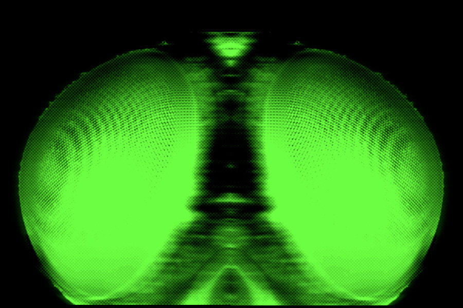
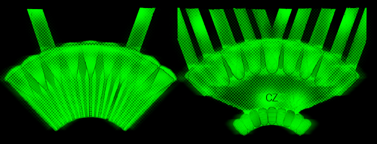
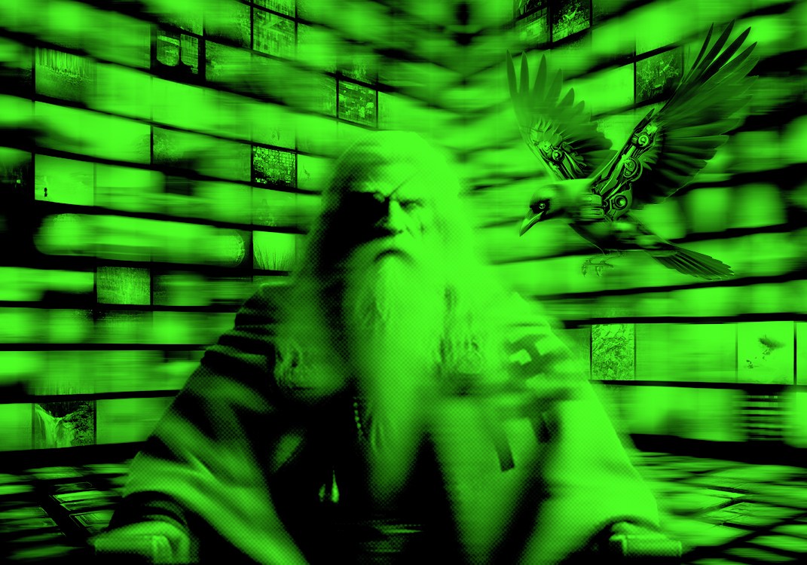
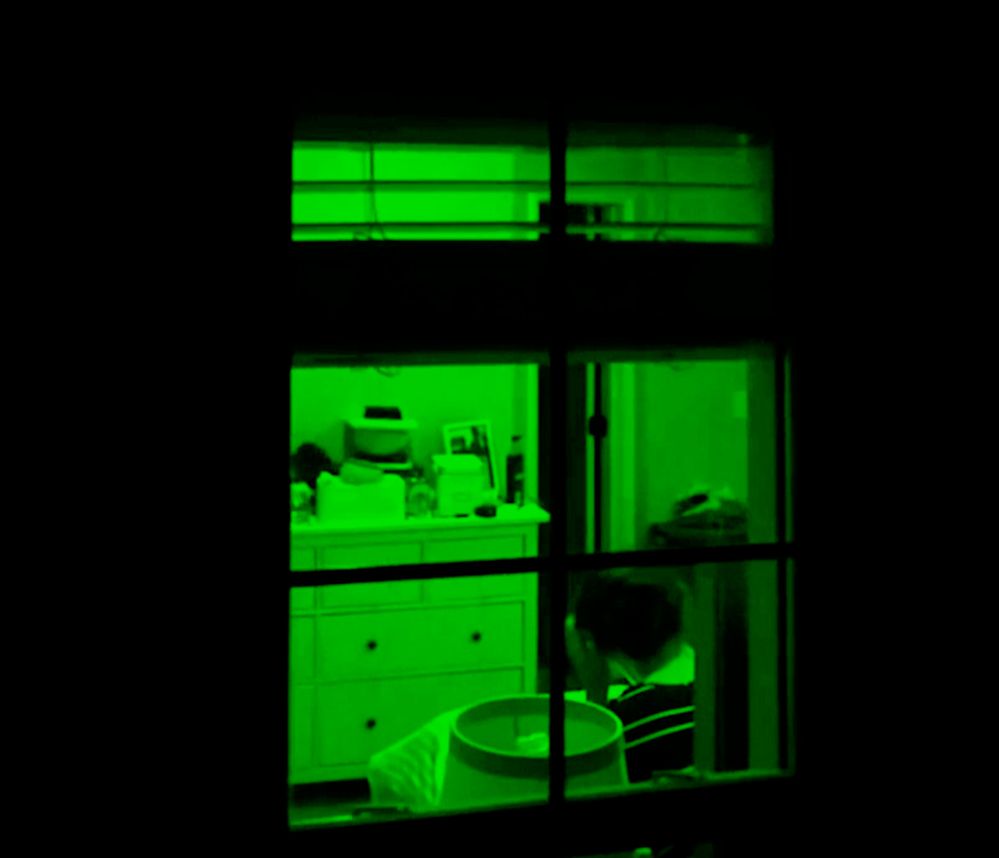
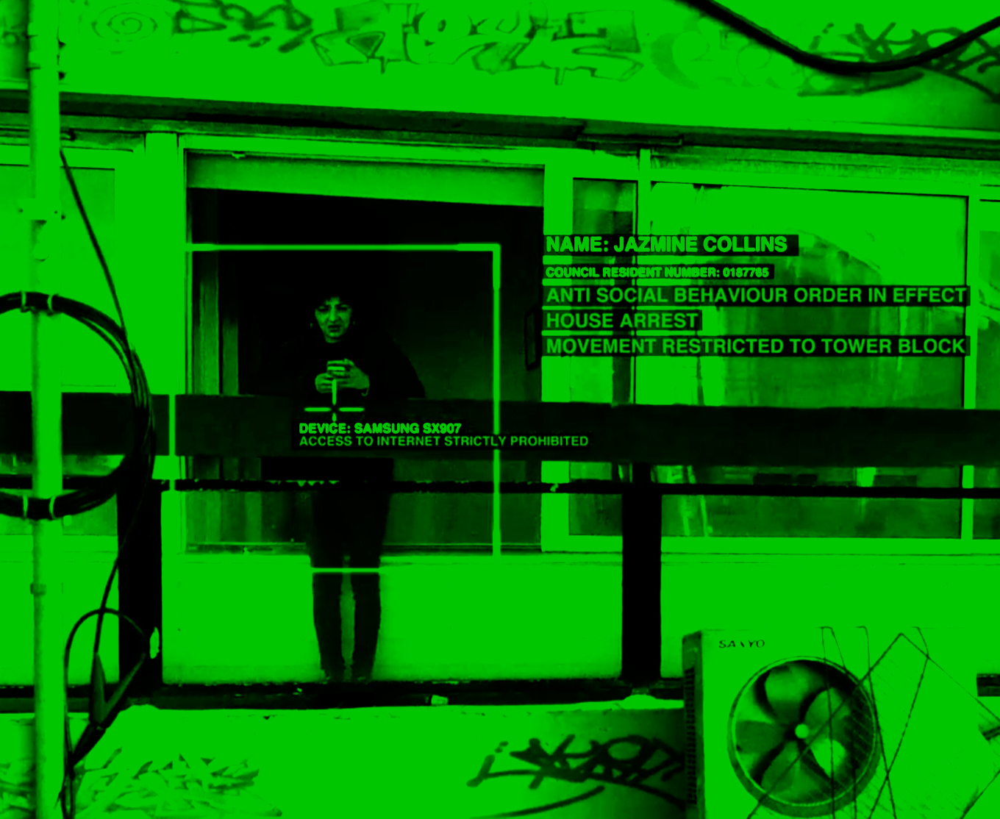
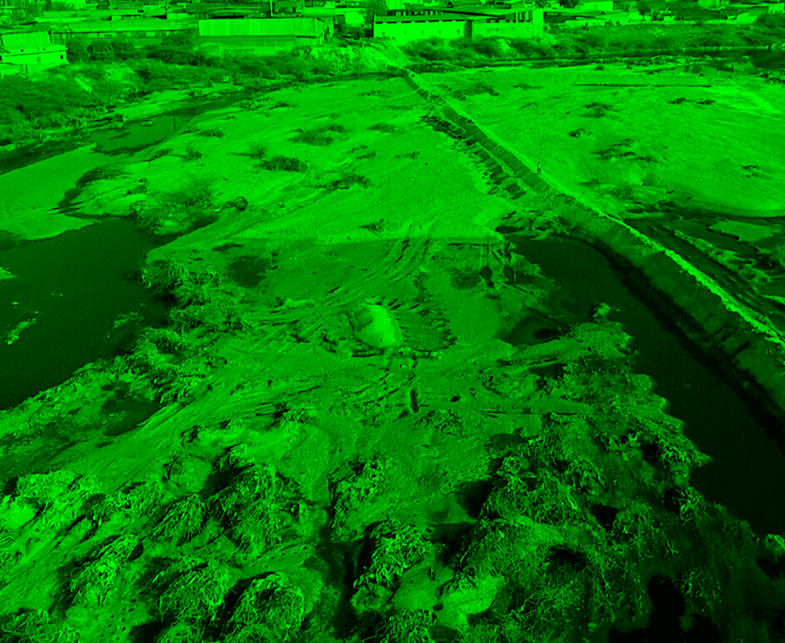
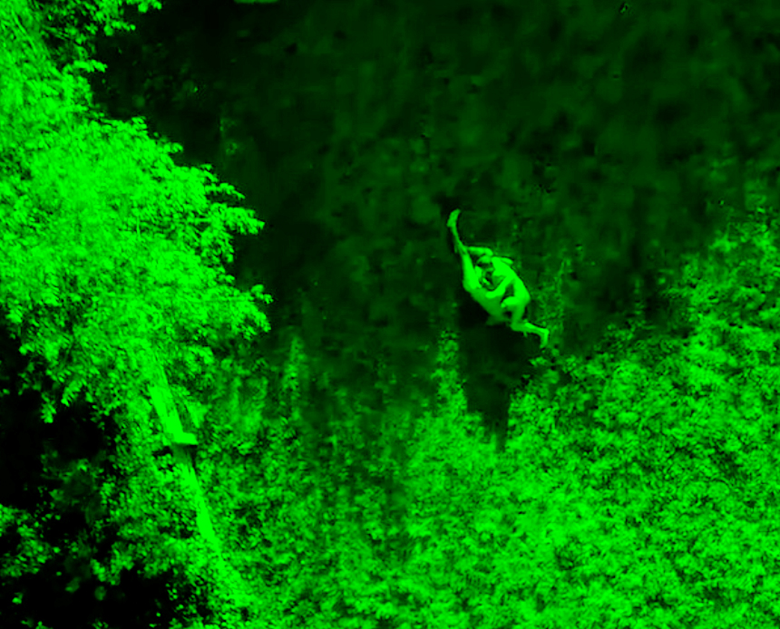
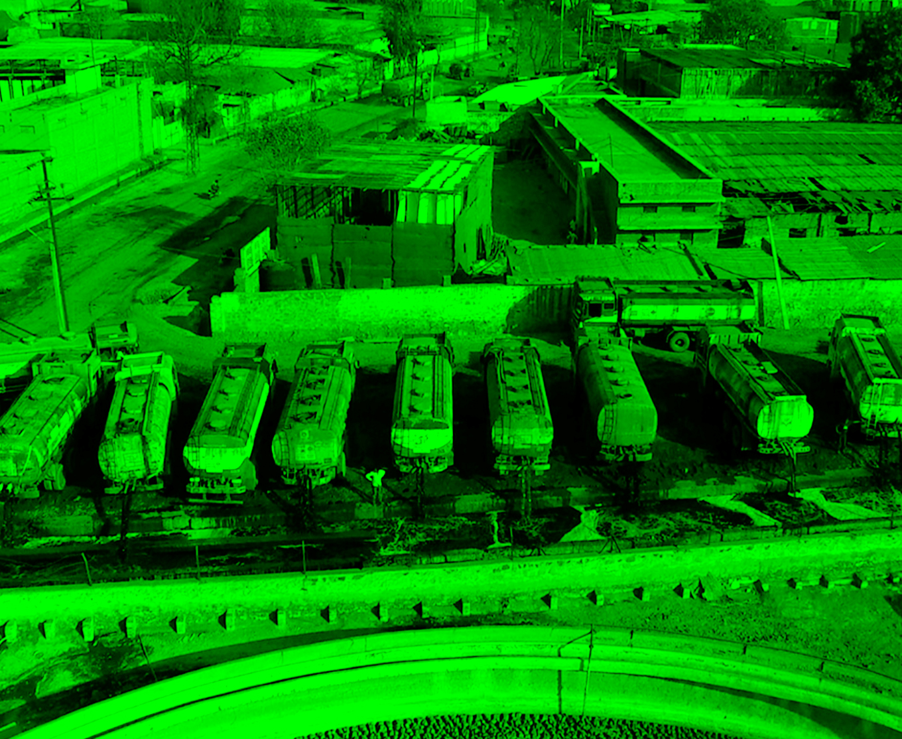

Panoramic Eye:
Monitoring Everything
Drosophila's compound eye, capable of 360-degree viewing and rapid image processing, provides insights into the visual mechanisms of more complex organisms and how visual information guides behavior. Inspired by this, we've developed UAV camera systems that mimic these biological structures, enabling comprehensive, real-time surveillance. This innovative technology has not only pushed the boundaries of traditional surveillance but has completely redefined what modern monitoring can achieve.
Our website delves into the workings of the compound eye, how drones monitor the world from all angles, advanced image processing methods, and motion detection. By understanding the principles and benefits of the compound eye, we can gain a deeper understanding of nature's influence on the development of modern technology
Chapter 1: Wide angle view
The compound eye of Drosophila consists of about 750 small eyes, each containing eight photoreceptor neurons, and each small eye is an independent visual unit. Because these small eye pillars cover the entire surface of the eye and face in different directions, they can capture light from almost any direction. The spherical layout of the compound eye allows Drosophila to observe almost its entire surroundings, achieving a near 360-degree field of view.

Modeled after the structure of the fruit fly's compound eye, the drone can be fitted with multiple small cameras that are arranged in a spherical or hemispherical arrangement, facing in different directions. This layout allows the drone to cover an almost 360-degree field of view and observe its surroundings without having to turn the body.
Chapter 2: Fast image processing
Each pinna contains eight photoreceptor neurons, and each pinna is a separate visual unit. Each ocellar column contains its own lens, pigment cells, and a set of photoreceptor cells. In our experiments, for Drosophila, we were able to use relatively low-power infrared illumination (propagated through its intact head) and still obtain high signal-to-noise DPP imaging at high frame rates (>100 fps).
Fast image processing is crucial for UAV applications. Drawing on the structure and function of the compound eye of the fruit fly, we can design a UAV camera system that can rapidly process large amounts of visual data. Such a system can greatly enhance the performance of UAVs in a variety of application scenarios, where images captured by each camera can be processed in parallel under 360-degree dead-angle surveillance, thus dramatically reducing data processing time.
Chapter 3: High gynamic resolution
All fruit flies have an optic rod in each eyelet. This is basically how insects "see". Light passes through the lens and focuses on the optic rod, stimulating the photoreceptor pigments. In most insect eyes, each pinna is like a "pixel" that the insect can see. Although it is not actually a "pixel", for simplicity's sake it is a good analogy. The fruit fly's optic rod is divided into seven parts. It's a fairly complex system, but basically Drosophila can increase its resolution by a factor of 7 without increasing the size of its eyes. They have high visual acuity and are particularly sensitive to fast-moving objects, even if they are very small in size. This characteristic allows the insects to react quickly to threats or opportunities from different directions.

Drawing on this biological mechanism, a drone camera could be designed to contain multiple independent receiving units, each capable of segmenting and processing incoming light like a fruit fly's optical rod. Such a design would not only increase the overall resolution of the camera, but also enhance its ability to capture and analyze high-speed moving objects. For example, drones can more accurately capture details of rapidly changing scenes when performing urban surveillance or nature observation, thus providing higher quality data to support decision-making and response.
chapter 4: Mythological story
Odin's Digital Ravens:
The Drones That Watch Over Us

In a city illuminated by neon lights, Odin rules as a supreme authority, using his high-tech surveillance ravens to watch over everything. These ravens capture every urban detail, from alleyway crimes to whispered secrets. With this exhaustive surveillance, Odin maintains his power by managing threats and shaping public opinion.
Raven's report 1
I keep a vigilant eye on the girl, ensuring her safety as we patrol the tower. My duty is to ensure she does not stray beyond these confines. You term it house arrest. She harbors little fondness for me, but I am merely executing the commands you've given, my lord.

From my hidden perch behind the leafy tree, I observe her through the window, perched on the edge of her bed. The lace of her bra mimics the shadow patterns cast by the leaves. She appears melancholic, her gaze lost across the room.

From my covert position, I observe Jazmine Collins through her window. She is confined to her apartment under a house arrest order due to antisocial behavior, her movements strictly limited to the tower block. She holds her Samsung SX907, but her internet access is heavily restricted. There's a palpable sadness in her demeanor as she interacts with her device, likely feeling the weight of her isolation.

Raven's report 2
I behold the sacred rivers of India, now flowing with the season's vibrant hues as chemicals from the dye process are cast into their waters, untreated, poisoning the land along their rainbow-tinted banks.

Observing from above is a pastime of mine. Do you sense my gaze upon you? Can you detect my presence from afar? Are you aware of me watching you as you watch, in this endless loop of surveillance?

My flight above Pali reveals a troubling sight. A line of trucks from the neighboring factories discharges their toxic waste into a drain adjacent to a water treatment plant. This careless act taints the water system, threatening the purity of this vital resource. The sight from above paints a stark contrast between industrial neglect and the efforts to preserve cleanliness.
